Hooligan
Jump to navigation
Jump to search
| Requirements | |
|---|---|
| Base Level: | None |
| Starting Point: | Summer Island |
| Items: | 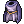 Adventurer's Suit [0] x1 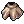 Muffler [0] x1 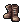 Shoes [0] x1  Violin [3] x1 Violin [3] x1 Shark x1 Shark x1 Marlin x3 Marlin x3 Salmon x5 Salmon x5 Summer Festival Coin x1000 Summer Festival Coin x1000
|
| Rewards | |
| Experience: | - |
Walkthrough
While walking around Summer Island, you may feel that your pockets are lighter! As you check them, you might notice that a few Summer Festival Coins are missing...
- After noticing you're a few coins short, walk up near the Excavation Expert NPC, by the Ferris Wheel, and talk to Newoz.
- Newoz will tell you that the team will await your presence by the Voltz Clicker.
- Watch the cutscene
- The party will ask for a few items before proceeding. You can buy them in shops around Rune-Midgard!
- Adventurer's Suit [0]
- Muffler [0]
- Shoes [0]
- Violin [3]
- The Adventurer's Suit, Muffler and Shoes can be bought from the Prontera Armor Dealer .
- The Violin [3] can be bought from the Comodo Weapon Dealer .
- Return to where the party is and deliver the items to proceed the quest.
- Enter the cave, watch the cutscene and kill the three wolves.
- Now you'll need to participate in the Fishing Tournament and fish the following:
- After coming back inside the cave, the Hooligan will ask for 1000 Summer Festival Coins.
- After that, you can choose one of the hats (listed below).
- If you're lucky, he just might return the coins he stole from you!


{kind=link}
{kind=link}
Quest Rewards
All the hats are account-bound!
| Quest Rewards | ||
|---|---|---|
| Image | Name | Description |
| 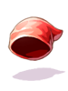 | 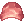 Hooligan's Bandana [1] | This is something that many sailors of Alberta wear when sailing through the seven seas. It helps prevent seasickness and its bright color makes it easier to see men who have fallen overboard. DEX+1
|
| 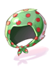 | 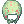 Thief Bandana [0] | A bandana that can be worn to disguise yourself one of the common folk.
Has a chance of auto-casting Gank while physically attacking.
|
| 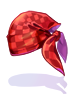 | 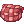 Checkered Bandana [1] | A bandana worthy of a true hooligan.
AGI + 2
|
| 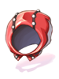 | 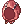 Red Hood [1] | You will feel in a fairy tale after worn it.
CRI +10.
|
See Also
| Summer Festival | ||
|---|---|---|
| General | Frying Dutchman • King's Grotto • Summer Concert • Hooligan • Summer Tablet • Festival Hat Recolors • Summer Shops | |
| Games | Multiplayer Games • Singleplayer Games • Arcade Games • Frenzy Mode | |
| Activities | Digging • Fishing Tournament • Summer Foraging • Summer Cooking | |